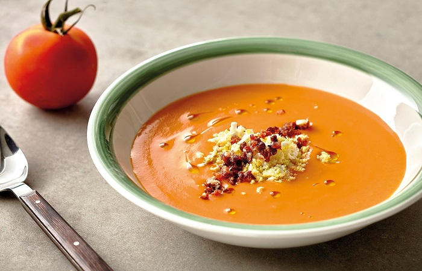

Salmorejo Cordobés Casero
El gusto de ser andaluz.

Ingredientes:
- 150g de aceite de oliva virgen extra
- 1kg de tomates maduros
- 1 cucharadita de sal
- 150g de miga de pan blanco
- 30g de vinagre
- 1-2 dientes de ajo
- huevo duro y taquitos de jamón para decorar(opcional)
Receta:
- Ponga en una batidora o procesador de alimentos los dientes de ajo, el tomate y la sal y triture durante 30 segundos.
- Añada el pan y el vinagre y vuelva a triturar hasta que queden la textura deseada para el salmorejo (aproximadamente 2 minutos).
- Mientras la batidora o procesador está en marcha vierta poco a poco el aceite hasta que se incorpore por completo.
- Reserve en un recipiente en el frigorífico y sirva frío adornado con el jamón y huevo picados si lo desea.
Información nutricional (100g):
- -Calorías:
- 124 Kcal
- -Proteínas:
- 2 g
- -Hidratos carbono:
- 11 g
- -Grasas:
- 8 g